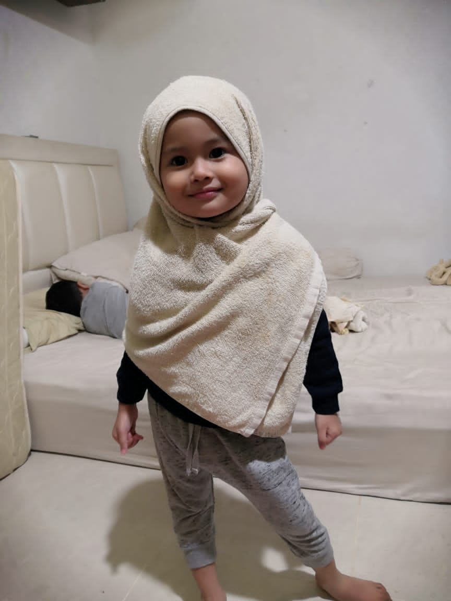
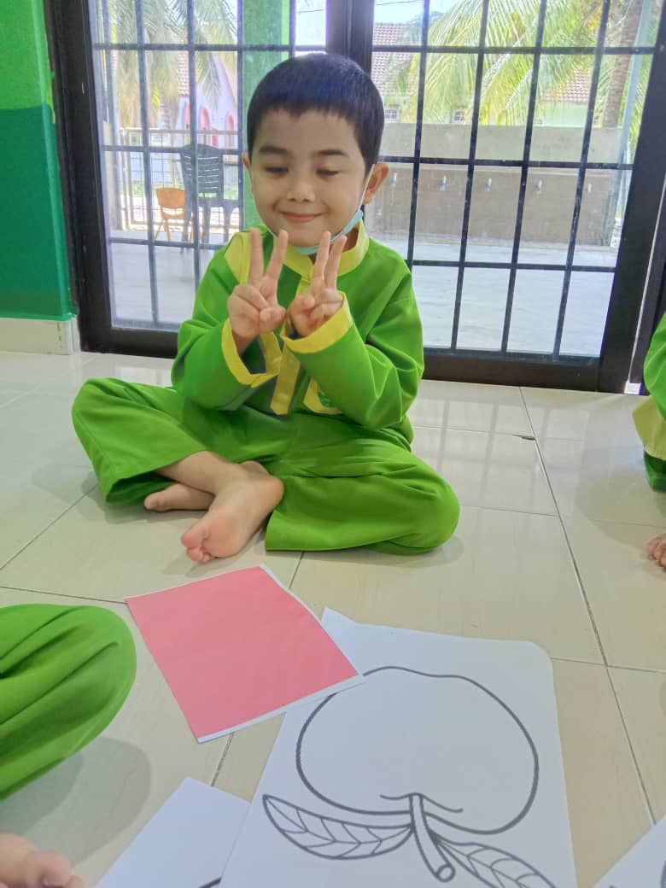
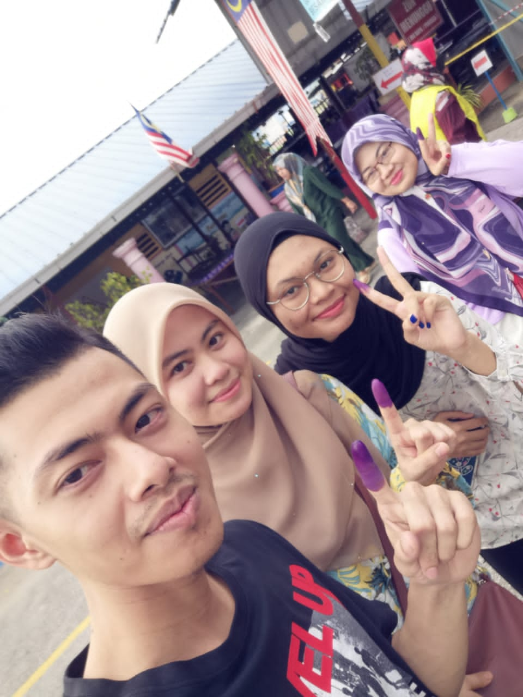
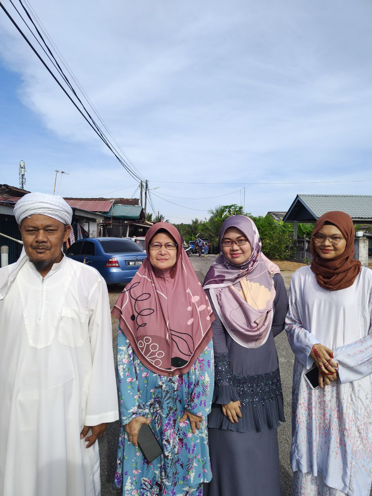

MY NOT-SO-BIG-FAMILY
"We may have our differences, but nothing’s more important than family."
This is my father. His name is Mohd Sekeri bin Said and he was born 13 March 1963 and he’s 59 years old this year. He works at Jabatan Kerja Raya Jajahan Machang as a security guard and soon will retired. My father personality is, he is hardworking man and doesn’t talk a lot. He cared about our family and will fulfill our need as much as he can. He loves listen to the religious talk in Youtube during his leisure time.
This is my mother.Her name is Huzaimah binti Omar. She was born in 28 April 1968 and she is 54 now. She was born in Terengganu and lived in Kelantan after married to my father. She is a full-time housewife. My mother can be described as a hardworking, firm but soft in educated her children. She also likes to share a story with my father and my other sibling. Other than that, she also like to cook her children’s favorite food. For example, she always cook sup tulang which is my favorite dish every time I back home from university for holiday.
This is my first elder brother. His name is Muhammad Asadul Safuan and he is 33 years old. Frankly, he grown up with my grandmother in Terengganu and most of his life was spend with my grandmother. Hence, I rarely met him as we do not grow together. However, I can describe him as a firm but softspoken person. He also married and lived in Terengganu.
This is my first elder sister. Her name is Ainin Sofiya. She is 31 years old and happily married. I would say, she has inspired me in a lot of ways. She always helped me with my homework when I was a kid. She also inspired me to further my study. She also has a good personality. She is independent, patient, softspoken, hardworking, intelligent, mannered, and talented. She is the perfect example of “beauty with brain”. Besides, she also a good mother to her children. I adore her very much and want to be like her.

This is my second sister. Her name is Ainna Safina and she is 27 years old this year. She is the sibling that I’m most close with. We shared a lot of secrets together and we also have a lot of commons. For example, we like to food hunting, take a picture, explore new things and so on. She always supports me for whatever things I do. Besides, I also asked for her advise for something that I’m not clear. I would say she is type of person that shows love through actions as she always care for me silently.
This is my second brother. His name is Muhammad Abdul Alim. He is 23 years old this year and currently in Shah Alam. I would describe my him as a shy person and doesn’t talk a lot. However, he is the person that my family can rely on. Sometimes, he also makes a silly joke. In my opinion, if I want to find a partner, I will prefer a man like my brother because he is a good figure for a young man, and it is hard to find a man such as him nowadays. It is because he doesn’t smoke and most importantly, he do congregational prayer for five times in mosque.
MY FAMILY GALLERY<3
This is my first family photo after I was born
My nephew and my niece

This is my niece, Raihan Khadijah
My nephew, Muhammad Muaz
A selfie of my siblings. This selfie taken after we done with the GE15
This photo taken in Eid 2022


